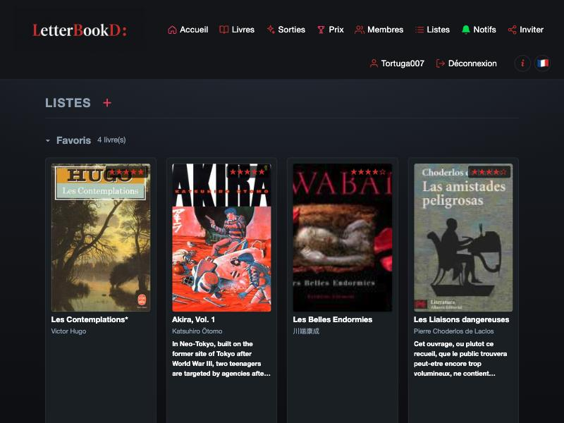

Listes
À quoi ça sert : Organiser tes lectures : favoris, à lire, livres déjà parcourus, plus toutes les listes thématiques que tu veux créer (genres, thèmes, défis de lecture).

Parcours
Trois listes système sont toujours présentes : 'Favoris' (cœur), 'À lire' (file d'attente), 'Tous mes livres' (tout ce que tu as enregistré). Elles sont suivies de tes listes personnelles. Chaque liste se replie/déplie via son chevron, affiche son compteur de livres, et expose ses livres sous forme de couvertures avec étoiles de note en surimpression. Un 'Publier' (+) en haut crée une nouvelle liste.
Chaînes d'action
Chaque ligne décrit un déclencheur dans l'interface, ce qu'il ouvre (modal ou formulaire), et l'effet produit.
| Déclencheur | Modal / Champs | Effet |
|---|---|---|
| Bouton '+' à côté de 'Listes' | Champ 'Titre' (120 caractères max). | Crée une nouvelle liste vide ; elle apparaît immédiatement dans la colonne de gauche prête à être garnie depuis les fiches livres. |
| Chevron devant une liste | — | Ouvre/ferme l'accordéon. Une seule liste peut être ouverte à la fois (name='lists-acc'). |
| Icône corbeille à côté d'un livre (dans une liste) | Formulaire POST confirmatif. | Retire le livre de la liste. Le livre reste dans le catalogue et dans tes autres listes. |
| Icône corbeille sur une liste personnelle | Formulaire POST confirmatif. | Supprime la liste en entier (les livres eux-mêmes sont conservés, seule la liste disparaît). Les listes système ne sont pas supprimables. |